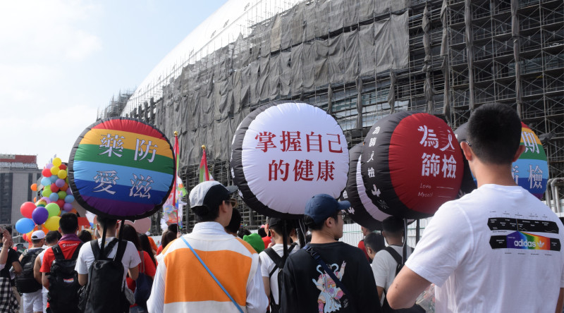

12.1是世界艾滋病日，你知道吗？| 同霓校园突击
世界艾滋病日
我们都干了啥
“没有人只活在艾滋病日里，
也没有人只活在艾滋病里”
为提高人们对艾滋病的认识，世界卫生组织于1988年1月将每年的12月1日定为世界艾滋病日，号召世界各国和国际组织在这一天举办相关活动，宣传和普及预防艾滋病的知识。
12月1日是第32个世界艾滋病日，同霓人类研究小组借这个特殊的日子在广财校园中开展了一次特殊的采访，从中了解了随机十位同学对于艾滋病的认识以及对婚前性行为问题的看法。

我们此次采访名为“让艾走，让爱留”，旨在了解广财学生对于艾滋病的了解以及对婚前性行为的看法。受访者共十位，分别为五男五女。
值得肯定的是，绝大部分受访者都对艾滋病有较为充分的了解与认识，且不存在对艾滋病的偏见与歧视。同时，受访者中有半数同学表示接受婚前性行为，并具有较为良好的使用安全套意识，其余不接受的同学也没有表现出对其强烈的反对情绪。

可见在广财校园中虽然存在较为保守的性观念，但也绝不是迂腐而是出于一种个人选择。总体上，广财校园的大环境较为开放包容，同时性安全意识较强。
受访者中大部分同学了解艾滋病相关知识的来源都是学校组织的课程、讲座，同时，网络以及公益广告也是途径之一。值得肯定的是，同学们了解艾滋病以及各种性知识的途径变得更加规范，有效避免了因认识误区增加感染艾滋病几率的发生。

随着艾滋病相关知识的普及，如今的大学生群体对艾滋病的了解更加深刻，我们希望针对艾滋病相关的教育在得到基本保障的同时能够进一步完善和发展。在预防艾滋病传播的同时对艾滋病患者多一些理解和包容，反对艾滋病的污名化。
更多现场采访照片：


左滑观看
文：亚历珊卓
采访人员：
彗星
萨隆
yy